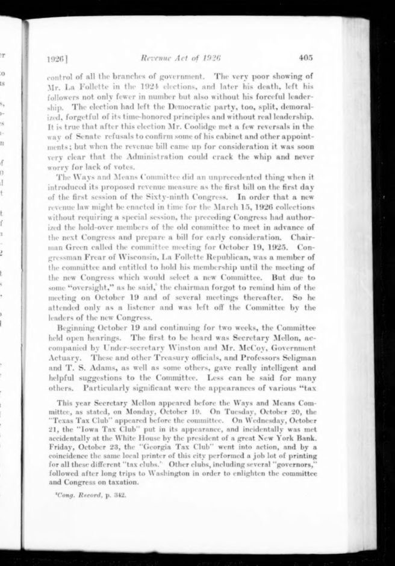

Blakey e os impostos de 1926, Graham e as máquinas
Leitura: 12 min
Blakey avalia a lei que cortou pela metade os impostos sobre grandes rendas e heranças; Cobb defende o método quantitativo; Graham separa salário alto e mecanização; Brissenden revê a economia do trabalho.


“Um programa permanente de tempos de paz”: assim o presidente da Comissão de Meios e Recursos da Câmara, Green, definiu o projeto que virou a lei de receitas de 1926. O número de setembro de 1926 da American Economic Review abre com a avaliação dessa lei por Roy G. Blakey, da Universidade de Minnesota. A conta é simples e está no primeiro parágrafo: as alíquotas máximas da sobretaxa sobre grandes rendas e do imposto sobre grandes heranças caíram pela metade, de 40% para 20%.
O resto da edição volta ao método. John Candler Cobb, de Boston, defende que a economia segue o caminho das ciências naturais, do qualitativo ao quantitativo. Frank D. Graham, de Princeton, encerra uma controvérsia da revista sobre salários e máquinas. Paul F. Brissenden, de Columbia, usa um manual recém-publicado para descrever a transformação da economia do trabalho. Nas comunicações, Percy W. Bidwell responde a uma resenha sobre a história da agricultura do Norte, e Carl Snyder volta ao debate sobre juros e ciclo de negócios. Completam o número resenhas, listas de livros novos, resumos de periódicos, documentos, a lista anual de teses de doutorado em andamento e notas.
Quem ganhou com a lei de receitas de 1926?
Roy G. Blakey (University of Minnesota) · “The Revenue Act of 1926” · pp. 401–425
Blakey resume a lei em dezessete itens. A sobretaxa máxima passou a 20% sobre a renda acima de US$ 100 mil, contra 40% sobre o excedente de US$ 500 mil em 1924; as rendas até US$ 26 mil não mudaram. As deduções pessoais subiram de US$ 1.000 para US$ 1.500 para solteiros e de US$ 2.500 para US$ 3.500 para chefes de família, o que isentou cerca de um terço dos contribuintes. A divulgação dos valores pagos por cada contribuinte foi revogada, assim como o imposto sobre doações. No imposto sobre heranças, a isenção dobrou para US$ 100 mil e o crédito pelo imposto estadual subiu de 25% para 80% do federal.
O autor dá igual peso ao ambiente político. A vitória republicana de 1924 deu ao governo Coolidge controle quase incontestado, e o projeto foi o primeiro apresentado no primeiro dia do 69º Congresso. Nas audiências, ao lado de Mellon, Seligman e T. S. Adams, desfilaram “clubes tributários” e governadores de 32 estados. As emendas para manter sobretaxas maiores caíram por larga margem: a de 40% por 70 a 15, a de 25% por 54 a 25. A publicidade das declarações, aprovada pelo Senado por 48 a 27 em 1924, foi rejeitada por 32 a 49.
O comentário final se apoia em E. M. Patterson: as alíquotas efetivamente pagas ficaram abaixo da metade das máximas, e o debate se concentrava nos tetos. Blakey preferia usar os superávits para amortizar a dívida e questiona confinar o imposto de renda a um vigésimo quinto da população. Lembra ainda que, com a alíquota máxima reduzida e o crédito de 80% aos estados, o imposto federal sobre heranças renderia apenas de US$ 10 milhões a US$ 20 milhões por ano. E fecha com ironia: se cada corte traz mais receita, com alíquota zero a dívida inteira seria paga num só ano.
A economia vai se tornar uma ciência quantitativa?
John Candler Cobb (Boston) · “Quantitative Analysis and the Evolution of Economic Science” · pp. 426–433
Cobb parte do discurso presidencial de Wesley C. Mitchell, de 1925, e de uma constatação: já não se discute análise qualitativa contra quantitativa. Sua tese é que a segunda é complementar à primeira e a sucede naturalmente. Todas as ciências, diz, começam pela dedução a partir da observação, passam por métodos qualitativos e avançam para métodos quantitativos, com tendência à exatidão. Nenhuma é exata; exatidão é questão de grau.
Os exemplos são a astronomia, a química, cujo desenvolvimento quantitativo começa com Lavoisier, e sobretudo a medicina, que compartilharia com a economia a tradição, o preconceito e a proximidade com a vida diária. Os métodos qualitativos acham uma erva que alivia a dor; os quantitativos a transformam em droga de dose exata. O caso citado é a insulina.
O alvo é um artigo de Warren M. Persons de julho de 1925, que via contribuições da estatística à teoria mas duvidava de seu alcance em questões como tarifa contra livre-comércio, apoiado no estudo de F. W. Taussig sobre o ferro. Cobb responde que a pergunta estava mal posta: o livre-comércio seria uma condição, a proteção uma política, e o problema real, bem-estar nacional contra bem-estar mundial. O estudo do ferro, longe de fracassar, indicaria que o crescimento da indústria se deveu sobretudo a outras causas, como demanda, jazidas e técnica. Bastaria perguntar quais foram as causas do crescimento para que a tarifa aparecesse como “um traço”.
Cobb sugere ainda que o método teria sido mais bem testado em casos com menos fatores complicadores, como açúcar, lã ou seda, antes de enfrentar o ferro. A conclusão é que o fato de cinco homens, ou cinco gerações, não terem resolvido um problema por métodos quantitativos não prova que ele seja insolúvel. Prever quanto a análise quantitativa vai realizar é especulação, mas nenhum problema pode ser declarado fora de seu alcance. A atitude recomendada vem da anedota de um menino que cavava atrás de uma marmota: tinha de pegá-la, porque o pastor vinha jantar e não havia carne em casa.
Salários altos levam ao uso de máquinas?
Frank D. Graham (Princeton University) · “Relation of Wage Rates to the Use of Machinery” · pp. 434–442
Graham revê uma controvérsia publicada na própria Review, em que H. G. Hayes atacara o consenso de que salários altos levam a mais mecanização. A pergunta: mantido o resto constante, compensa usar máquinas onde os salários são relativamente altos, quando não compensaria em outro lugar? Salário, aqui, é salário real geral; uso de máquinas é máquina por unidade de produto.
A resposta depende da causa do salário alto. No exemplo do autor, habilidade e salário real crescem 25% em todas as ocupações; as tabelas de custo da produção manual e da mecânica continuam equivalentes, porque a máquina passa a substituir menos trabalhadores. Hayes estaria certo na conclusão, mas não na razão. E, se a produção maior encarece as matérias-primas das máquinas, pode haver até volta ao trabalho manual. O efeito se inverte quando o salário sobe por recursos naturais melhores, invenções ou maior disposição a poupar.
Entre países, três causas explicariam o uso maior de máquinas onde os salários são altos: populações mais habilidosas inventam primeiro; trabalhadores adaptáveis rendem mais com máquinas do que à mão; e máquinas fazem sobretudo tarefas simples, em que um trabalhador quase não supera outro, como a do vigia. A conclusão é que decide a distribuição da renda entre fatores e ocupações, não o nível absoluto do salário.
Há um círculo, diz o autor: salários baixos em relação à habilidade impedem o uso de máquinas, e
a falta de máquinas impede que esses salários subam. (the failure to use machinery prevents those wages from rising)
Quando barreiras como casta social ou restrições sindicais impedem trabalhadores capazes de passar a ocupações mais bem pagas, o emprego com salário baixo em tarefas que em outros países são feitas por máquinas se perpetua, e a produtividade e o nível geral de salários ficam menores. O remédio proposto por Graham é remover as restrições à livre concorrência; feito isso, as máquinas seriam usadas onde aumentassem a produtividade nacional.
O que muda quando o trabalho vira disciplina econômica?
Paul F. Brissenden (Columbia University) · “Labor Economics” · pp. 443–449
Brissenden toma a publicação de Labor Economics, de Solomon Blum (Henry Holt, 1925), como acontecimento para todos os interessados em relações industriais. O livro seria o último de uma linhagem americana iniciada com Labor Problems, de Adams e Sumner, em 1905, e que passa por Carlton, Groat, Hoxie, Watkins, Atkins e Lasswell e Fitch. Ao lado dela cresceu outra, a dos manuais de gestão de pessoal, de Tead e Metcalf a Hoopingarner, e as duas, diz o autor, se aproximaram.
A convergência ilustra o rumo da economia: da dedução à indução, do homem econômico às instituições criadas por grupos. Os textos antigos tratavam imigração, greves, cooperativas, salários e seguro social como uma lista de “problemas”; os novos tratam o campo como um conjunto integrado de relações, com ênfase nos contratos individuais e coletivos. Brissenden liga a mudança a fatos novos: jornadas mais curtas, sindicatos reconhecidos que dividem responsabilidades, cooperativas e bancos de sindicatos e planos de representação de empregados promovidos pelas empresas.
O livro tem 21 capítulos, sete deles, quase um terço, sobre legislação do trabalho e situação jurídica dos sindicatos e da greve. Blum organiza o campo em torno do conflito entre a empresa privada, produtiva mas desordenada, e a padronização imposta pela sociedade por meio de leis, sindicatos e movimentos coletivistas. O resenhista discorda da ordem dos capítulos e acha o estilo desigual, mas põe o livro entre os dois ou três melhores manuais disponíveis.
Destaca, por outro lado, a familiaridade do autor com a literatura, dos clássicos aos textos dos Wobblies, e com as leis e decisões judiciais, que aparecem às centenas na análise, além da bibliografia por capítulo e do índice detalhado. A principal lacuna seriam os comitês de fábrica, tratados em menos de dez páginas. O texto termina com uma nota pessoal: Blum escreveu o livro durante mais de dez anos na Universidade da Califórnia, doente, e morreu pouco depois da publicação.
Por que separar a agricultura do Norte e a do Sul?
Percy W. Bidwell (Bruxelas) · “A Note on Review of History of Agriculture in the Northern United States” · pp. 450–451
Coautor do livro resenhado pelo professor Schmidt em dezembro, Bidwell responde às duas críticas. Sobre a ausência do Sul, admite que a maioria dos agricultores sulistas antes de 1860 era de pequenos proprietários, mas sustenta que as condições eram diferentes demais: a escravidão freou a acumulação de capital e o crescimento de cidades, o algodão dependia de mercados externos, e o Norte encontrou um mercado interno nas comunidades industriais surgidas depois de 1810. Sobre a visão estreita, responde que a síntese nacional exige antes uma série de monografias baseadas em fontes primárias.
Os juros comandam o ciclo de negócios?
Carl Snyder (Nova York) · “Interest Rates and the Business Cycle” · pp. 451–452
Snyder responde a Waldo F. Mitchell, que contestara seu artigo de dezembro de 1925. Para ele, as evidências de Mitchell, sobre ganhos de bancos, rendimentos de títulos e peso dos juros nas vendas das empresas, não tocam a questão: os ganhos bancários dependem do tipo de empréstimo, e os movimentos longos dos juros acompanham o valor da moeda, não o ciclo. Que juros e negócios se relacionam ninguém discute; o problema é se há causalidade. Os picos e vales da taxa do papel comercial em 1920 e 1922 vieram quase um ano depois das viradas do comércio.
O que mais há na edição?
A seção de resenhas abre com dois livros resenhados por John Ise, de Kansas: Economics: Principles and Problems, de Lionel D. Edie, e The Economic Problem, de R. G. Hawtrey. Abbott Payson Usher resenha The Rise of Modern Industry, de J. L. e Barbara Hammond, Germany’s Industrial Revival, de Philip Dawson, e a história do progresso econômico americano de Walter W. Jennings. Há ainda The Oil Industry and the Competitive System, de George W. Stocking, por William F. Jones; Depreciation in Public Utilities, de Delos F. Wilcox, por James P. Adams; um estudo sobre a comissão de salário mínimo de Ohio, por M. B. Hammond; a legislação protetora do trabalho feminino em Nova York, de Elizabeth Faulkner Baker, por Amy Hewes; Population Problems in the United States and Canada, organizado por Louis I. Dublin, por Norman E. Himes; o relatório de Massachusetts sobre pensões para idosos, por J. P. Chamberlain; três obras sobre abonos familiares, por Paul H. Douglas; e Purchasing Power of the Consumer, de Berridge, Winslow e Flinn, por W. Randolph Burgess. Seguem as listas de livros novos por área, os resumos de periódicos, documentos, a vigésima terceira lista de teses de doutorado em economia política em andamento nas universidades americanas e as notas.
Na minha leitura
Na minha leitura, o número mostra a economia americana de 1926 dividida entre dois registros. Blakey e Graham fazem análise aplicada com instrumentos precisos: a distância entre alíquota legal e efetiva, a diferença entre salário e custo do trabalho por unidade de eficiência. Cobb e Brissenden discutem o próprio método e a organização da disciplina.
O fio comum é a passagem da doutrina à medição e às instituições. A pergunta de Snyder sobre causalidade entre juros e ciclo e a de Cobb sobre como isolar o efeito de uma tarifa são versões do mesmo problema: separar, em dados observados, o efeito de uma variável do efeito das outras.
Glossário
- Sobretaxa (surtax)
- imposto progressivo adicional sobre as faixas mais altas da renda.
- Imposto sobre heranças (estate tax)
- imposto federal sobre o patrimônio deixado por uma pessoa ao morrer.
- Análise quantitativa
- estudo das relações econômicas com dados numéricos e métodos estatísticos.
- Salário real
- salário em dinheiro dividido por um índice de preços.
- Relações industriais
- estudo das relações entre empregadores, empregados e suas organizações.
- Papel comercial
- título de curto prazo emitido por empresas para financiar capital de giro.
Artigos (4)
- The Revenue Act of 1926 — Roy G. Blakey (University of Minnesota) (pp. 401–425) · resenha acima · comentário completo
- Quantitative Analysis and the Evolution of Economic Science — John Candler Cobb (Boston, Massachusetts) (pp. 426–433) · resenha acima · comentário completo
- Relation of Wage Rates to the Use of Machinery — Frank D. Graham (Princeton University) (pp. 434–442) · resenha acima · comentário completo
- Labor Economics — Paul F. Brissenden (Columbia University) (pp. 443–449) · resenha acima · comentário completo
Resenhas (16)
- Lionel D. Edie, Economics: Principles and Problems — John Ise (University of Kansas) (pp. 453–455). Resenha de manual que procura integrar os ramos da investigação econômica.
- R. G. Hawtrey, The Economic Problem — John Ise (University of Kansas) (pp. 455–457). Resenha do livro de Hawtrey sobre mercados e organização econômica.
- Grundriss der Sozialökonomik, Part IX, Das soziale System des Kapitalismus, Section 1 — R. R. Whitehead (pp. 458–460). Resenha do volume sobre as classes sociais no capitalismo do grande tratado alemão de economia social.
- J. L. Hammond e Barbara Hammond, The Rise of Modern Industry — Abbott Payson Usher (Harvard University) (pp. 465–467). Resenha de estudo interpretativo da revolução industrial para o leitor geral.
- Philip Dawson, Germany’s Industrial Revival — Abbott Payson Usher (Harvard University) (pp. 468–469). Resenha de livro sobre a recuperação industrial alemã.
- Walter W. Jennings, History of Economic Progress in the United States — Abbott Payson Usher (Harvard University) (pp. 469–470). Resenha de manual de história econômica americana.
- George W. Stocking, The Oil Industry and the Competitive System — William F. Jones (Massachusetts Institute of Technology) (pp. 475–477). Resenha do ensaio premiado sobre a indústria do petróleo e a concorrência.
- Delos F. Wilcox, Depreciation in Public Utilities — James P. Adams (Brown University) (pp. 481–486). Resenha de monografia sobre a depreciação nos serviços públicos.
- Elliot G. Mears e Mathew O. Tobriner, Principles and Practices of Coöperative Marketing — H. E. Erdman (University of California) (pp. 486–489). Resenha de manual sobre comercialização cooperativa.
- Ellery F. Reed, An Analysis of the Report of the Ohio Minimum Wage Commission — M. B. Hammond (Ohio State University) (pp. 495–497). Resenha crítica de análise do relatório da comissão de salário mínimo de Ohio.
- Elizabeth Faulkner Baker, Protective Labor Legislation with Special Reference to Women in the State of New York — Amy Hewes (Mount Holyoke College) (pp. 498–499). Resenha de estudo sobre a legislação protetora do trabalho feminino em Nova York.
- Louis I. Dublin (org.), Population Problems in the United States and Canada — Norman E. Himes (Cornell College) (pp. 511–514). Resenha de coletânea surgida da reunião de 1924 da American Statistical Association.
- Walter G. Beach e coautor, An Introduction to Sociology and Social Problems — A. B. Wolfe (Ohio State University) (pp. 515–517). Resenha de manual de sociologia e problemas sociais.
- Report on Old-Age Pensions by the Commission on Pensions, Massachusetts Senate Document No. 5 — J. P. Chamberlain (Columbia University) (pp. 520–522). Resenha do relatório da comissão de Massachusetts sobre pensões para idosos.
- Hugh H. R. Vibart, Family Allowances in Practice; Mary T. Waggaman, Family Allowances in Foreign Countries; Joseph L. Cohen, Family Income Insurance — Paul H. Douglas (University of Chicago) (pp. 523–524). Resenha conjunta de três obras sobre abonos familiares.
- William A. Berridge, Emma A. Winslow e Richard A. Flinn, Purchasing Power of the Consumer — W. Randolph Burgess (New York City) (pp. 526–527). Resenha do índice estatístico do poder de compra do consumidor premiado pela J. Walter Thompson Company.
Novos livros (16)
- New Books (pp. 460–465). Lista de livros novos, com notas breves, sobre obras gerais, teoria e sua história.
- New Books (pp. 470–475). Lista de livros novos, com notas breves, sobre história e geografia econômica.
- New Books (pp. 477–478). Lista de livros novos sobre agricultura, mineração, silvicultura e pesca.
- New Books (pp. 479–480). Lista de livros novos sobre transporte e comunicação.
- New Books (pp. 480–481). Lista de livros novos sobre comércio e crises comerciais.
- New Books (pp. 489–493). Lista de livros novos, com notas breves, sobre contabilidade, métodos de negócios, investimentos e bolsas.
- New Books (pp. 493–494). Lista de livros novos sobre capital e organização capitalista.
- New Books (pp. 499–503). Lista de livros novos sobre trabalho e organizações de trabalhadores.
- New Books (pp. 503–509). Lista de livros novos, com notas assinadas, sobre moeda, preços, crédito e bancos.
- New Books (pp. 509–511). Lista de livros novos sobre finanças públicas, tributação e tarifa.
- New Books (pp. 514–515). Lista de livros novos sobre população e migração.
- New Books (pp. 518–520). Lista de livros novos sobre problemas sociais e reformas.
- New Books (pp. 522–523). Lista de livros novos sobre seguros e pensões.
- New Books (pp. 524–525). Lista de livros novos sobre pobreza, caridade e assistência.
- New Books (pp. 525–526). Lista de livros novos sobre socialismo e cooperativas.
- New Books (pp. 527–528). Lista de livros novos sobre estatística e seus métodos.
Documentos, periódicos e notas (6)
- A Note on Review of History of Agriculture in the Northern United States — Percy W. Bidwell (Bruxelas, Bélgica) (pp. 450–451). Comunicação: resposta à resenha de Schmidt, defendendo o tratamento separado da agricultura do Norte e a prioridade das monografias. · ler o comentário
- Interest Rates and the Business Cycle — Carl Snyder (Nova York) (pp. 451–452). Comunicação: resposta a Waldo F. Mitchell; as viradas dos negócios precedem as dos juros, que não seriam fator decisivo do ciclo. · ler o comentário
- Periodicals (pp. 529–553). Resumos de artigos de periódicos, por área.
- Documents, Reports, and Legislation (pp. 553–556). Notas sobre documentos oficiais, relatórios e legislação.
- Twenty-Third List of Doctoral Dissertations in Political Economy in Progress in American Universities and Colleges (pp. 556–583). Lista anual de teses de doutorado em economia política em andamento.
- Notes (pp. 583–592). Notícias da associação, da profissão e das universidades.
Fontes
- The Revenue Act of 1926 (pp. 401–425). Internet Archive (número completo, PDF)
- Quantitative Analysis and the Evolution of Economic Science (pp. 426–433). Internet Archive (número completo, PDF)
- Relation of Wage Rates to the Use of Machinery (pp. 434–442). Internet Archive (número completo, PDF)
- Labor Economics (pp. 443–449). Internet Archive (número completo, PDF)
- A Note on Review of History of Agriculture in the Northern United States: A Communication (pp. 450–451). Internet Archive (número completo, PDF)
- Interest Rates and the Business Cycle: A Communication (pp. 451–452). Internet Archive (número completo, PDF)
- Review: Economics: Principles and Problems by Lionel D. Edie (pp. 453–455). Internet Archive (número completo, PDF)
- Review: The Economic Problem by R. G. Hawtrey (pp. 455–457). Internet Archive (número completo, PDF)
- Review: Grundriss der Sozialökonomik, Part IX, Das soziale System des Kapitalismus, Section 1 (pp. 458–460). Internet Archive (número completo, PDF)
- New Books: General Works, Theory and Its History (pp. 460–465). Internet Archive (número completo, PDF)
- Review: The Rise of Modern Industry by J. L. Hammond and Barbara Hammond (pp. 465–467). Internet Archive (número completo, PDF)
- Review: Germany’s Industrial Revival by Philip Dawson (pp. 468–469). Internet Archive (número completo, PDF)
- Review: History of Economic Progress in the United States by Walter W. Jennings (pp. 469–470). Internet Archive (número completo, PDF)
- New Books: Economic History and Geography (pp. 470–475). Internet Archive (número completo, PDF)
- Review: The Oil Industry and the Competitive System by George W. Stocking (pp. 475–477). Internet Archive (número completo, PDF)
- New Books: Agriculture, Mining, Forestry, and Fisheries (pp. 477–478). Internet Archive (número completo, PDF)
- New Books: Transportation and Communication (pp. 479–480). Internet Archive (número completo, PDF)
- New Books: Trade, Commerce, and Commercial Crises (pp. 480–481). Internet Archive (número completo, PDF)
- Review: Depreciation in Public Utilities by Delos F. Wilcox (pp. 481–486). Internet Archive (número completo, PDF)
- Review: Principles and Practices of Coöperative Marketing by Elliot G. Mears and Mathew O. Tobriner (pp. 486–489). Internet Archive (número completo, PDF)
- New Books: Accounting, Business Methods, Investments, and the Exchanges (pp. 489–493). Internet Archive (número completo, PDF)
- New Books: Capital and Capitalistic Organization (pp. 493–494). Internet Archive (número completo, PDF)
- Review: An Analysis of the Report of the Ohio Minimum Wage Commission by Ellery F. Reed (pp. 495–497). Internet Archive (número completo, PDF)
- Review: Protective Labor Legislation with Special Reference to Women in the State of New York by Elizabeth Faulkner Baker (pp. 498–499). Internet Archive (número completo, PDF)
- New Books: Labor and Labor Organizations (pp. 499–503). Internet Archive (número completo, PDF)
- New Books: Money, Prices, Credit, and Banking (pp. 503–509). Internet Archive (número completo, PDF)
- New Books: Public Finance, Taxation, and Tariff (pp. 509–511). Internet Archive (número completo, PDF)
- Review: Population Problems in the United States and Canada, edited by Louis I. Dublin (pp. 511–514). Internet Archive (número completo, PDF)
- New Books: Population and Migration (pp. 514–515). Internet Archive (número completo, PDF)
- Review: An Introduction to Sociology and Social Problems by Walter G. Beach and coauthor (pp. 515–517). Internet Archive (número completo, PDF)
- New Books: Social Problems and Reforms (pp. 518–520). Internet Archive (número completo, PDF)
- Review: Report on Old-Age Pensions by the Commission on Pensions (Massachusetts) (pp. 520–522). Internet Archive (número completo, PDF)
- New Books: Insurance and Pensions (pp. 522–523). Internet Archive (número completo, PDF)
- Review: Family Allowances in Practice by Hugh H. R. Vibart; Family Allowances in Foreign Countries by Mary T. Waggaman; Family Income Insurance by Joseph L. Cohen (pp. 523–524). Internet Archive (número completo, PDF)
- New Books: Pauperism, Charities, and Relief Measures (pp. 524–525). Internet Archive (número completo, PDF)
- New Books: Socialism and Co-operative Enterprises (pp. 525–526). Internet Archive (número completo, PDF)
- Review: Purchasing Power of the Consumer by William A. Berridge, Emma A. Winslow and Richard A. Flinn (pp. 526–527). Internet Archive (número completo, PDF)
- New Books: Statistics and Its Methods (pp. 527–528). Internet Archive (número completo, PDF)
- Periodicals (pp. 529–553). Internet Archive (número completo, PDF)
- Documents, Reports, and Legislation (pp. 553–556). Internet Archive (número completo, PDF)
- Twenty-Third List of Doctoral Dissertations in Political Economy in Progress in American Universities and Colleges (pp. 556–583). Internet Archive (número completo, PDF)
- Notes (pp. 583–592). Internet Archive (número completo, PDF)
- Número completo digitalizado (domínio público): Internet Archive.
Documento em domínio público (EUA, publicado antes de 1931), via JSTOR Early Journal Content e Internet Archive. Resumo e comentário do autor deste site, sem afiliação com a American Economic Association. Encontrou um erro? Escreva: a correção é publicada no próprio texto, com data.
← Nº 198 · Manual de 1926: a carta de 1923, Evanston e Mises e Hayek em Viena Nº 200 · Feis e o ajuste externo, Cole e as manias agrícolas →